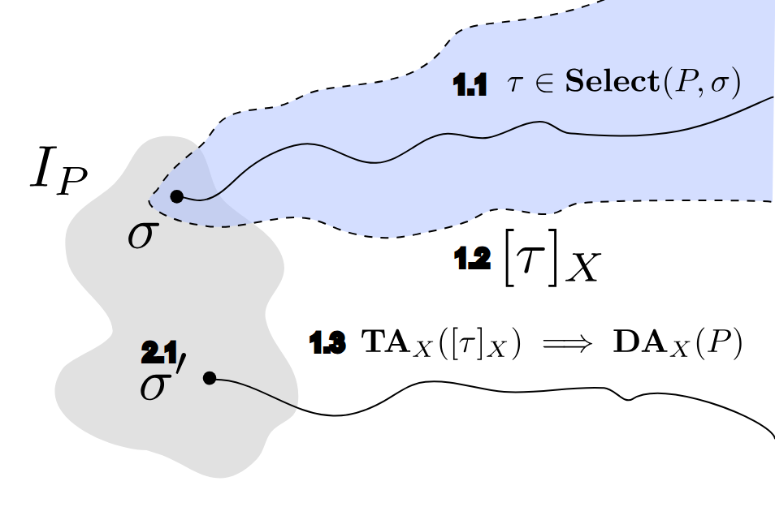

Let's run it and see. How to learn about a program by executing it: which runs to pick, what to look for in a run, what a handful of runs can and cannot prove, and how fuzzers choose inputs that reach the interesting corners of the code.
24 topics12 interactive labs67 questionsNotes: C. G. Kalhauge, DTU Compute
In plain wordsHow it worksFormally
Part 1
Vocabulary: runs, may and must
01
What is dynamic analysis?
Learning about a program by running it
In plain words
Suppose you want to know whether a vending machine ever gives the wrong change. You could study its circuit diagrams (that would be a static analysis), or you could simply put coins in and watch what comes out. That second approach is dynamic analysis: every experiment teaches you one true fact about the machine.
The catch is that you only learn about the experiments you actually did. You have been doing this for years: every unit test, every print statement and every hunt through a log file is a dynamic analysis.
How it works
Dynamic analysis finds out information about a program by executing it and examining what happened during the execution.
Everyday examples: writing a test (run with an input, check the result), inserting log statements (record what happened), searching a production log to recreate a bug, profilers, memory sanitizers and fuzzers.
Running is the easy part. The two hard questions are: which executions should we run (which inputs, which environment), and what may we conclude from them about all the executions we did not run?
In theory, dynamic analysis is about extracting information about all behaviours of a program (its whole, usually infinite, set of traces) from a few executions.
Roadmap of this page: Part 1 fixes the vocabulary (may, must, sound, complete), Part 2 the three phases of a dynamic analysis, Part 3 the practicalities of running programs and testing, Part 4 the strategies for choosing inputs (fuzzing).
Own figure. A dynamic analysis sees a finite subset $T$ of the program's runs and must reason about the rest.
Formally
Definition 4.1 Dynamic analysis
A dynamic analysis of a program $p$ chooses finitely many initial states $\sigma_1, \ldots, \sigma_k \in I_p$, executes $p$ from each of them and obtains a finite set of observed traces $T = \{\tau^1, \ldots, \tau^k\}$ with $\tau^j_0 = \sigma_j$. Its verdict $\DA(p)$ is computed from $T$ alone. Because every observed trace is a real execution,
$$T \subseteq \Sem(p) \qquad\text{and}\qquad |T| \lt \infty.$$
"The runs we look at are genuine runs of the program, and there are only finitely many of them."
Proposition 4.2 Observed witnesses are real
For every trace property $Q$: $$\big(\exists \tau \in T.\ Q(\tau)\big) \implies p \models^{\may} Q.$$
"If one of the runs we observed has the property, then the program really can exhibit it."
Proof
Take the observed $\tau \in T$ with $Q(\tau)$. Since $T \subseteq \Sem(p)$, $\tau$ is a trace of $p$, so it witnesses $\exists \tau \in \Sem(p).\ Q(\tau)$, which is the definition of $p \models^{\may} Q$ (topic 02). ∎
The converse fails: if no trace in $T$ has $Q$, we know nothing about the traces outside $T$. This asymmetry between "found it" and "did not find it" runs through the whole lecture.
Key ideaA dynamic analysis looks at a subset of the real traces. What it finds is real; what it misses can still exist.
02
Traces, may and must
The vocabulary from the trace terminology note
In plain words
Think of a program as a choose-your-own-adventure book. Every way of reading it from the first page to an ending is a trace. A "may" statement says at least one reading meets a dragon. A "must" statement says every reading meets a dragon.
To show "may", you only need to point at one reading. To show "must", you have to check all of them. And "it is not true that some reading has a dragon" is just another way of saying "every reading is dragon-free".
How it works
Recap from Semantics: a program is a transition system: a set of states, a single-step relation $\delta_p$ (one small step of the interpreter) and a set of initial states $I_p$ (one per possible input).
A trace $\tau$ is the sequence of states one execution visits: $\tau_0$ is an initial state, and each next state is a successor of the previous one. $\tau_i$ is the state after $i$ steps; we write $\tau_{-1}$ for the last state of a finite trace.
$\Sem(p)$, the maximal trace semantics, is the set of all complete runs: each one runs until it cannot step any more (it returned ok or hit an error), or it runs forever.
A property $Q$ is a yes/no question about a single trace: "does it end in ok?", "does it ever execute instruction 4?", "does it throw an assertion error?".
A may property holds for at least one trace, a must property for all traces.
Duality: negating a may property gives a must property of the negated question. "The program can not divide by zero" is the same as "every run avoids dividing by zero".
Example, assertPositive(int num) with $Q$ = "ends in an assertion error": may holds (input 0), must fails (input 1), and therefore "must not end in an assertion error" also fails.
Formally
Definition 4.3 Transition system
A transition system is a triple $\langle \State_p, \delta_p, I_p \rangle$: the program states $\State_p$, the transition relation $\delta_p \subseteq \State_p \times \State_p$ given by the single-step semantics, and the initial states $I_p \subseteq \State_p$.
Definition 4.4 Traces and the maximal trace semantics
A trace is a finite or infinite sequence of states, $\Trace_p \subseteq \State_p^{\,n}$ for $n \in [1, \infty]$. The semantics of $p$ is
$$\Sem(p) = \{\, \tau \in \State_p^{\,n} \mid n \in [1, \infty],\ \tau_0 \in I_p,\ \forall i \in [1, n-1].\ \delta_p(\tau_{i-1}, \tau_i) \,\}$$
restricted to maximal traces: if $n \lt \infty$, the last state $\tau_{n-1}$ has no successor.
"A trace of $p$ starts in an initial state, every consecutive pair is one legal step, and a finished trace stops only where the program cannot step any more."
CarefulThe formula in the notes does not state the maximality condition explicitly; without it, every prefix of a run would also count as a trace and "ends in ok" would be false for most of them. The word maximal is what rules prefixes out.
The second equivalence is the same argument with $\neg\forall \equiv \exists\neg$. ∎
03
Sound, complete, not-may and not-must
What exactly an analysis promises
In plain words
A smoke detector can fail in two ways: it can beep when there is no fire (a false alarm), or stay silent during a fire (a miss). "Sound" and "complete" are the two promises an analysis can make: "whenever I say something, it is true" versus "whenever something is true, I will say it".
For the interesting questions about programs you cannot keep both promises at once, so every analysis picks a side.
How it works
An analysis $\mathbf{A}$ is an automatic procedure tailored to one property $Q$. We write $p \vdash_{\mathbf{A}}^{\may} Q$ when it claims "$Q$ may happen", and $p \vdash_{\mathbf{A}}^{\must} Q$ when it claims "$Q$ must happen". The turnstile $\vdash$ means "the analysis derives"; $\models$ means "is actually true".
Sound: never wrong when it claims something. Complete: never misses something true.
Static analyses accept or reject programs (questions over all traces, must), dynamic analyses accept or reject traces (questions about some trace, may). So "a sound static analysis" usually means must-sound and "a sound dynamic analysis" means may-sound.
To keep the complete analyses apart, the course calls them not-may ($\vdash^{\notmay}$) and not-must ($\vdash^{\notmust}$) analyses: they over-approximate the property, so they are implied by the truth instead of implying it.
Duality of analyses: the negation of a complete may analysis is a sound must analysis of the negated property. If a not-may analysis for "divide by zero" cannot find any division by zero, then no run divides by zero.
Warnings vs positives: "false positive" is ambiguous (positive about programs or about traces?). The course says warning for a reported bug, a classification over traces. A sound dynamic analysis never produces false warnings; a sound static analysis may.
sound (no wrong claims)
complete (no misses)
may ($Q$ for some trace)
$p \vdash^{\may} Q \Rightarrow p \models^{\may} Q$ a fuzzer that reports a crash it actually produced
$p \models^{\may} Q \Rightarrow p \vdash^{\notmay} Q$ a sign analysis flagging every possible division by zero
must ($Q$ for all traces)
$p \vdash^{\must} Q \Rightarrow p \models^{\must} Q$ a verifier proving "never divides by zero"
$p \models^{\must} Q \Rightarrow p \vdash^{\notmust} Q$ "$Q$ held in every test we ran" (topic 07)
Formally
Definition 4.8 Analysis judgements
An analysis $\mathbf{A}$ for a property $Q$ produces judgements $p \vdash_{\mathbf{A}}^{\may} Q$, $p \vdash_{\mathbf{A}}^{\must} Q$ (claims that should imply the truth) or $p \vdash_{\mathbf{A}}^{\notmay} Q$, $p \vdash_{\mathbf{A}}^{\notmust} Q$ (claims that should be implied by the truth).
Definition 4.9 Soundness
$$p \vdash_{\mathbf{A}}^{\must} Q \implies p \models^{\must} Q \qquad\qquad p \vdash_{\mathbf{A}}^{\may} Q \implies p \models^{\may} Q$$
"Every property the analysis reports is really a property of the program."
Definition 4.10 Completeness
$$p \models^{\may} Q \implies p \vdash_{\mathbf{A}}^{\notmay} Q \qquad\qquad p \models^{\must} Q \implies p \vdash_{\mathbf{A}}^{\notmust} Q$$
"Whenever the property truly holds, the analysis reports it (it may also report it when it does not hold)."
Proposition 4.11 Duality of analyses
$$\neg\big(p \vdash_{\mathbf{A}}^{\notmay} Q\big) \implies p \models^{\must} \neg Q \qquad\qquad \neg\big(p \vdash_{\mathbf{A}}^{\notmust} Q\big) \implies p \models^{\may} \neg Q$$
So "not $p \vdash^{\notmay} Q$" is a sound must analysis for $\neg Q$, written $p \vdash_{\mathbf{A}}^{\must} \neg Q$, and "not $p \vdash^{\notmust} Q$" is a sound may analysis for $\neg Q$.
"When a never-missing may analysis stays silent, $Q$ really cannot happen; when a never-missing must analysis says no, $\neg Q$ really can happen."
Proof
Take the completeness requirement and flip the implication by negating both sides (contraposition):
By Proposition 4.7, $\neg(p \models^{\may} Q) \equiv p \models^{\must} \neg Q$. The second statement is identical with may and must swapped. ∎
Theorem 4.12 Sound or complete, never both
Let $Q$ be a property such that $p \models^{\may} Q$ is non-trivial (true for some programs of a Turing-complete language and false for others). Then no analysis that always terminates is both sound and complete for it.
Proof sketch
Sound and complete together give $p \vdash_{\mathbf{A}} Q \iff p \models^{\may} Q$ for every $p$. A terminating $\mathbf{A}$ would therefore decide a non-trivial semantic property, contradicting Rice's theorem. ∎
Definition 4.13 Bounded semantics and properties
Bounding the trace length by $k$ gives $\Sem^k(p) = \{\tau \in \State_p^{\,n} \mid n \in [1, k],\ \tau_0 \in I_p,\ \forall i \in [1, n-1].\ \delta_p(\tau_{i-1}, \tau_i)\}$ and bounded properties $p, k \models^{\may} Q$, $p, k \models^{\must} Q$ (quantifying over $\Sem^k(p)$). Bounded results do not transfer:
$$p, k \models^{\must} Q \;\nRightarrow\; p \models^{\must} Q \qquad\qquad p \models^{\may} Q \;\nRightarrow\; p, k \models^{\may} Q.$$
"Something true for all runs up to $k$ steps can break at step $k+1$, and the only witness of a may property can be longer than $k$." Bounded analyses are the topic of next week.
CarefulThe words flip with the question. A bug finder with "no false warnings" (sound over traces) and a verifier that "accepts every correct program" (complete over programs) are the same promise seen from two sides. Practitioners therefore often say "sound = no false negatives" for static tools, which contradicts the definitions above. Always ask: is the claim about some trace (may) or about all traces (must)?
Part 2
The three phases of a dynamic analysis
04
The three phases
Select a run, predict its class, analyse, repeat
In plain words
A detective cannot follow every person in a city. They pick one person to follow for a day (selection), use what they saw to guess how similar people behave (prediction), and check the observations for anything suspicious (analysis). If nothing turns up, they pick someone new, preferably someone unlike the people they already followed.
How it works
Trace selection (figure: 1.1): choose an initial state $\sigma \in I_P$ (the inputs and the environment) and execute, which picks a trace $\tau \in \Select(P, \sigma)$. See topic 05.
Trace abstraction and prediction (figure: 1.2): generalise from the one trace to a class $[\tau]_X$ of traces that behave the same for the question $X$, so one execution speaks for many. See topic 09.
Trace analysis (figure: 1.3): decide the question on the trace (or the class) and turn it into a statement about the program: $\TA_X([\tau]_X) \implies \DA_X(P)$. See topic 06.
Repeat (figure: 2.1): if nothing was found, pick a new start $\sigma'$, ideally one whose trace lands in a class we have not seen yet.

Course notes, Dynamic Analysis. The steps of dynamic analysis: 1.1 select a trace, 1.2 predict the class it came from, 1.3 analyse; if nothing is found, repeat from a new $\sigma'$ (2.1).
Formally
Definition 4.14 The dynamic analysis loop
A dynamic analysis for a question $X$ repeatedly picks $\sigma_j \in I_P$, selects $\tau^j \in \Select(P, \sigma_j)$, forms its class $[\tau^j]_X$ and evaluates the trace analysis on it. The program-level verdict follows from the class-level ones:
$$\TA_X\big([\tau]_X\big) \implies \DA_X(P).$$
"If the trace analysis finds $X$ on the class of the observed trace, the dynamic analysis may conclude $X$ about the program."
T := {} # observed traces
repeat until the budget is spent:
pick sigma in I_P # 1.1 selection (ideally from an unseen class)
run P from sigma, get tau # tau in Select(P, sigma)
C := [tau]_X # 1.2 prediction / abstraction
if TA_X(C): report DA_X(P) # 1.3 analysis
T := T + {tau} # 2.1 otherwise, go again
CarefulThe notes number the sections 1.1 selection, 1.2 trace analysis, 1.3 trace abstraction and prediction, while the figure labels prediction 1.2 and analysis 1.3. Both are fine; the figure's order is the logical one (you predict the class before you analyse it). This page follows the notes' order of topics: selection, analysis, then prediction.
05
Trace selection
Pick a start, press play, get a trace
In plain words
Selecting a trace is pressing "play" with a particular input. For a deterministic program, the same input always plays the same movie. For a program with several threads, the same input can play different movies, depending on which thread happens to get the processor first. That is why some tests fail only "sometimes".
How it works
Selecting means choosing an initial state $\sigma \in I_P$ and executing. $\sigma$ contains the method's arguments but also the environment: heap contents, files, the clock, random seeds, the thread schedule.
Deterministic programs have exactly one trace per initial state. Our JPAMB interpreter is deterministic, so selecting a trace is the same as selecting an input.
Non-deterministic programs (parallel threads, random numbers, input from the outside world) can produce many traces from one initial state. Which one you get depends on luck, which leads to flaky tests and "heisenbugs" that vanish when you look.
Selection is not trivial in practice: setting up the environment can be hard (topic 13), and picking good inputs is the whole of Part 4 (fuzzing).
"Trying every possible start gives you every possible run."
Proof
($\supseteq$) Each $\Select(P, \sigma)$ is a subset of $\Sem(P)$ by definition. ($\subseteq$) Every $\tau \in \Sem(P)$ starts in $\tau_0 \in I_P$, so $\tau \in \Select(P, \tau_0)$. ∎
Definition 4.17 Determinism
$P$ is deterministic if every state has at most one successor: $\forall s, s', s''.\ \delta_P(s, s') \wedge \delta_P(s, s'') \implies s' = s''$.
Proposition 4.18 One trace per start
If $P$ is deterministic, then $|\Select(P, \sigma)| = 1$ for every $\sigma \in I_P$.
Proof
A maximal trace from $\sigma$ is built by repeatedly taking the successor of the last state until there is none. With at most one successor at each step, the $i$-th state is uniquely determined by induction on $i$ ($\tau_0 = \sigma$; $\tau_{i+1}$ is the unique successor of $\tau_i$), and so is the point where the trace stops (or that it never stops). Hence exactly one maximal trace starts in $\sigma$. ∎
06
Trace analysis
Questions you can answer from one recording
In plain words
Once you have a recording of a run, you can ask it questions, like reading a plane's flight recorder: did the flight land safely? Was a door opened and never closed again? Did the plane ever fly over this city? Each answer comes from reading the one recording, nothing else.
How it works
Did it end in success? Look at the last state: $\TA_{\ok}$.
Did some opened resource never get closed? Find an "open $f$" event with no "close $f$" at or after it: $\TA_{\mathtt{res}}$. $\mathbf{O}(s, f)$ means "state $s$ opens resource $f$", $\mathbf{C}(s, f)$ "state $s$ closes $f$".
Did we execute instruction $i$? Check whether $i$ is among the program counters of the trace: $\TA_{\mathtt{cover}(i)}$.
The notes "slightly abuse notation": $\tau_{-1}$ is the last element, $e.\iota$ is the program counter of state $e$, and $e \in \tau$ means "$e$ is one of the states of $\tau$".
These are temporal questions ("eventually", "from then on, never"), the territory of linear temporal logic (LTL), where $\Diamond\varphi$ means "eventually $\varphi$" and $\Box\varphi$ "from now on, always $\varphi$".
An infinite trace has no last state, so $\TA_{\ok}$ is false for it. In practice we only ever see a finite prefix before our step budget runs out.
Formally
Definition 4.19 Trace analyses
A trace analysis for a question $X$ is a predicate $\TA_X : \Trace \to \{\mathtt{tt}, \mathtt{ff}\}$ on single traces. Three examples:
$$\TA_{\ok}(\tau) \equiv \tau_{-1} = \ok$$
"The last state of the trace is the success state."
"Some resource $f$ is opened at step $i$, and at no step from $i$ on is it closed."
$$\TA_{\mathtt{cover}(i)}(\tau) \equiv i \in \{\, e.\iota \mid e \in \tau \,\}$$
"Instruction $i$ is the program counter of at least one state in the trace."
Definition 4.20 Two LTL operators
For a trace $\tau$ and a position $k$: $\tau, k \models \Diamond \varphi$ iff $\exists j \geq k.\ \tau, j \models \varphi$, and $\tau, k \models \Box \varphi$ iff $\forall j \geq k.\ \tau, j \models \varphi$. Then
$$\TA_{\ok}(\tau) \iff \tau, 0 \models \Diamond\, \ok \qquad \TA_{\mathtt{res}}(\tau) \iff \exists f.\ \tau, 0 \models \Diamond\big(\mathbf{O}_f \wedge \Box \neg \mathbf{C}_f\big)$$
"Eventually ok", and "eventually some $f$ is opened and from then on never closed".
07
From one trace to the whole program
One counterexample is enough to kill a "must"
In plain words
If someone claims "all swans are white", a single black swan proves them wrong, but a thousand white swans prove nothing. Runs work the same way: one bad run disproves "the program always works", while many good runs never prove it. As Dijkstra put it: testing can show the presence of bugs, never their absence.
How it works
Any question we can answer correctly on one trace becomes a not-must analysis for the whole program: run some inputs, and if any observed trace fails $X$, then $X$ is not a must property of the program.
Example: we find a trace that does not end in ok, so the program does not always succeed. Equivalently (by duality), a failure may happen.
Seen the other way round: "$X$ held on every trace I observed" is complete for must (a true must property always passes all your tests) but not sound (passing tests does not prove it).
Running more inputs makes the analysis more precise, and in the limit, if we could run every trace, a dynamic analysis captures any property exactly. The catch: most programs have infinitely many traces (or $2^{32}$ for one int).
Formally
Proposition 4.21 Refutation by one trace (as in the notes)
"If we could run every trace, checking $X$ on each of them would decide the property." (The notes write the right side as $\mathcal{L}_X(p)$, membership in the language of programs with property $X$.)
Proof
By Proposition 4.16 the selections over all $\sigma \in I_p$ cover exactly $\Sem(p)$, so the left side quantifies over the same set of traces as Definition 4.6. ∎
CarefulThe notes write the conclusion as $\neg \DA^{\must}_X(p)$, "not a must property". In the words of the trace terminology note, the analysis that checks $X$ on all observed traces is a not-must analysis (complete for must), and its negation is a sound may analysis of $\neg X$. Same mathematics, two names.
08
No analysis is truly sound
A story about memory leaks and coding conventions
In plain words
A smoke detector mounted above the toaster is technically right every time it beeps: there really is smoke. But if the family makes toast every morning, the detector ends up in a drawer. Being correct and being useful are two different things.
How it works
The plan: fuzz the firmware of an embedded device while running a memory sanitizer (like AddressSanitizer and its leak checker), and warn about every allocation that is never freed.
Sound in our sense: every warning came with a real trace in which memory was allocated and never freed.
But the company deliberately never freed the very first allocation: it lives as long as the device and disappears when the power goes off. To them, every one of those warnings was a false positive.
Lesson: soundness is always relative to the formal property you check, and that property must match the team's coding conventions. Real tools need suppressions, annotations or configuration. No analysis is fire-and-forget.
Story"I was convinced that we could create a sound dynamic memory analysis for a company focusing on embedded devices. [...] The analysis per se was sound; every trace we warned about contained a memory error, but the company in question had a coding style where they didn't clean up the initial memory allocation because it was cleaned up when the device was shut off." (Course notes)
Formally
Definition 4.25 Real versus relevant warnings
Let $Q$ be the property the analysis checks and $S$ the property the developers actually consider a bug. A warning is a trace $\tau$ with $Q(\tau)$. It is real if $\tau \in \Sem(p)$ and relevant if also $S(\tau)$. Soundness (Proposition 4.2) guarantees real warnings only; relevant warnings additionally need
$$\forall \tau.\ Q(\tau) \implies S(\tau).$$
"Every trace the tool complains about must also be a trace the team complains about."
In the story, $Q(\tau)$ = "some allocation is never freed" and $S(\tau)$ = "some allocation made after start-up is never freed". Since $Q \not\Rightarrow S$, real $Q$-warnings were irrelevant. The fix is to check $S$ instead, which requires knowing the convention.
09
Trace prediction
Learn about many traces from a single run
In plain words
If you watch one person take bus 5 home and arrive safely, you can predict that everyone else on bus 5 gets home the same way, even though you never watched them. They belong to the same class of journeys. Prediction lets one experiment stand in for a whole group of experiments.
How it works
The trace space is huge or infinite, so we cannot run everything. The trick is to map each trace $\tau$ to a class $[\tau]$ out of a (hopefully finite) set of classes, chosen so that traces in the same class behave the same for our question.
If what we conclude about a class is guaranteed to be witnessed by some trace in it, one run covers the whole class. Next time we select a trace from a class we have not covered yet, and with finitely many classes we can eventually cover all traces.
This is especially powerful for concurrent programs. Deadlocks and data races depend on the exact interleaving of threads and are very hard to hit by chance. From one observed run we can predict other feasible interleavings (reorderings of independent events) and report a race or deadlock the run did not actually hit. This is the idea behind sound deadlock prediction (Kalhauge and Palsberg 2018).
Example: thread 1 writes x, then much later thread 2 writes x, and nothing (no lock, no join) orders the two writes. The observed run did not show a conflict, but the reordered trace where both writes are adjacent is in the same class: a data race is predicted.
Formally
Definition 4.26 Trace classes
A trace classification is an equivalence relation $\sim$ on traces; the class of $\tau$ is $[\tau] = \{\tau' \in \Sem(p) \mid \tau' \sim \tau\}$. It is useful when $\Sem(p)$ splits into few classes.
Definition 4.27 Sound prediction
A prediction of $X$ on classes is sound if what it claims about a class is witnessed inside the class:
$$\TA_X([\tau]) \implies \exists \tau' \in [\tau].\ \TA_X(\tau').$$
"If we predict that the class contains an $X$-trace, there really is one." (The notes write $\mathbf{Trace}_X$ for $\TA_X$ here.)
Proposition 4.28 Covering all classes decides a may property
Suppose the prediction is exact, $\TA_X([\tau]) \iff \exists \tau' \in [\tau].\ \TA_X(\tau')$, and the observed traces $\tau^1, \ldots, \tau^k$ hit every class, $\Sem(p) = \bigcup_j [\tau^j]$. Then
$$p \models^{\may} X \iff \exists j.\ \TA_X([\tau^j]).$$
Millions of cars drive through a city, but if two cars take exactly the same streets in the same order, they followed the same route. Inputs are the cars and the route through the code is the path. Many bugs depend only on the route taken, not on which car took it.
How it works
Two traces are path-equivalent when they execute the same instruction offsets in the same order.
checkTheWrongThing(int a) checks the wrong part of the division:
int checkTheWrongThing(int a) {
if (a != 0) {
return a / 0;
} else {
return 0;
}
}
It has $2^{32}$ traces (one per int: 0, 1, -1, 2, ...) but only two path classes: offsets 0 1 2 3 4 ending in divide by zero for every $a \neq 0$, and 0 1 6 7 ending in ok for $a = 0$.
Many errors are path-dependent: once the run takes the path, the error happens whatever the exact values. That is why paths are the most interesting trace class.
A value-dependent error still gets its own class, but a tiny one: in divideByN the run with $n = 0$ stops at the division, so its path differs from all others. That class contains one input out of $2^{32}$.
Loops break the finiteness: countdown(n) has a different path for every number of iterations, so infinitely many (or $2^{31}$) classes.
"All traces of $p$ that have the same program counter as $\tau$ at every step", with both traces of the same length (a trace that stops earlier, for example in an error, differs at the first missing position). The notes start at $i = 1$; since every run starts at offset 0 this makes no difference.
Proposition 4.30 It is an equivalence relation
Writing $\pi(\tau) = (\tau_0.\iota)(\tau_1.\iota)(\tau_2.\iota)\cdots$ for the path of $\tau$, we have $\tau' \in [\tau]_\pi \iff \pi(\tau') = \pi(\tau)$. Equality of paths is reflexive, symmetric and transitive, so the classes partition $\Sem(p)$.
Worked example. For checkTheWrongThing, $\pi(\tau) = 0\,1\,2\,3\,4$ for every $a \neq 0$ (then $\err(\text{`divide by zero'})$) and $\pi(\tau) = 0\,1\,6\,7$ for $a = 0$ (then $\ok$). So $\Sem(p)$ has exactly two classes, of sizes $2^{32} - 1$ and $1$.
11
Coverage
How much of the program did we actually see?
In plain words
Coverage is the highlighter you drag over a textbook as you read: at the end you can see which pages you never touched. An unhighlighted page means either you never went there, or there is no way to get there at all.
How it works
Coverage measures how much of the program our traces exercised. Common variants: line coverage (source lines), branch coverage (each conditional jump taken both ways, or each control-flow edge) and instruction coverage (bytecode offsets).
Instruction coverage is especially nice: every trace in a path class visits the same instructions, so one run per path class already gives the coverage of the whole class.
So if some instruction is still uncovered, either we have not yet found the class that reaches it, or it is dead code that no input reaches.
Example: in assertFalse the final return is only reachable when assertions are disabled. Our semantics always reads $assertionsDisabled as false, so it is dead (in real Java it runs under java -da).
Full coverage is not full correctness: return 100 / (x - 7) is fully covered by the input $x = 1$, yet $x = 7$ divides by zero.
Formally
Definition 4.31 Instruction coverage
$$\#_\iota(T) = \{\, \tau_i.\iota \mid i \in [0, \infty],\ \tau \in T \,\}$$
"The set of program counters that appear anywhere in the set of traces $T$."
Proposition 4.32 One trace covers its whole path class
($\supseteq$) $\tau \in [\tau]_\pi$ and $\#_\iota$ is monotone. ($\subseteq$) Any $\tau' \in [\tau]_\pi$ has $\tau'_i.\iota = \tau_i.\iota$ for all $i$, so every program counter of $\tau'$ is already a program counter of $\tau$. ∎
Corollary 4.33 Uncovered means unexplored or dead
$\#_\iota$ is monotone ($T \subseteq T' \implies \#_\iota(T) \subseteq \#_\iota(T')$) and $\#_\iota(\Sem(p))$ is exactly the set of reachable instructions. Hence if $\iota \notin \#_\iota(T)$, either some unexplored class covers $\iota$, or $\iota \notin \#_\iota(\Sem(p))$ and $\iota$ is dead code.
Definition 4.34 Branch (edge) coverage
$\mathbf{E}(T) = \{\, (\tau_i.\iota,\ \tau_{i+1}.\iota) \mid \tau \in T,\ i \geq 0 \,\}$, the control-flow edges taken. Coverage is often reported as a ratio, e.g. $|\#_\iota(T)| \,/\, |\text{instructions}|$.
12
Trace abstraction
Record only what the question needs
In plain words
A security camera that films everything in 4K forever fills its disk in a day. If all you want to know is whether the door opened, a counter on the door is enough. Recording less makes analysis cheaper, as long as you keep exactly what the question needs.
How it works
Storing the full state (locals, stack, heap) at every step is expensive and wasteful; most questions need very little of it.
To find an error, store only the final outcome. For coverage, store only the program counter of each step. For leaks, store only open and close events.
At one end of the spectrum, the analysis runs during the execution and can even react to it (stop the program, raise an alarm): this is runtime verification or runtime monitoring. (The notes left this name as ??.)
At the other end, the analysis is so heavy, or only makes sense after a bug or an intrusion, that we record just enough of the trace and analyse it afterwards (post-mortem analysis, record and replay, forensics).
In an interpreter: do not keep a list of states; keep a set of program counters for coverage, or just the outcome.
Formally
Definition 4.35 Trace abstraction
An abstraction of states $h : \State \to O$ is lifted pointwise to traces, $h(\tau) = h(\tau_0)\,h(\tau_1)\,h(\tau_2) \cdots$. A trace analysis $\TA_X$ can be computed from $h$ if there is $\TA'_X$ with
$$\forall \tau.\ \TA_X(\tau) = \TA'_X\big(h(\tau)\big).$$
"Recording only $h$ of each state loses nothing that matters for $X$."
Examples: $h_{\mathtt{cover}}(s) = s.\iota$ suffices for $\TA_{\mathtt{cover}(i)}$ (check $i \in h_{\mathtt{cover}}(\tau)$); for $\TA_{\ok}$ it suffices to keep the last state. For $\TA_{\mathtt{res}}$ a monitor can even work online with a small memory: keep the set $m$ of currently open resources, $m_0 = \emptyset$, $m_{i+1} = (m_i \cup \text{opened}_i) \setminus \text{closed}_i$; a finite trace leaks iff its final $m$ is non-empty.
Part 3
Running the program
13
To run or not to run
What executing the program buys you, and what it costs
In plain words
A test drive tells you a lot about a car, and if it breaks down you have undeniable proof. But you cannot test drive a car whose garage you cannot reach, a test drive of a car with no brakes is dangerous, and driving for an hour never proves it will not break down in the second hour.
How it works
Why we should run the program
Most languages come with an interpreter or a runtime, so running can be easier than parsing and analysing the code (no syntactic analysis needed).
The analysis can hand you a concrete trace that produces the error: the input, the steps, the crash. That makes the bug easy to debug and impossible to dismiss.
A dynamic analysis under-approximates the set of traces, so every warning is real (Proposition 4.2).
Why we should not (or cannot) run it
Setting up the right environment (databases, configuration, hardware, network) can be hard, or impossible outside production.
Warning that something can happen by doing it is a problem when the program has side effects: deleting the database, sending emails, firing the missiles. You need sandboxes or mocks.
Running can never show that something cannot happen, for example that the program runs forever. A timeout is a guess, not a proof.
Formally
Proposition 4.36 Absence is not observable
If $T \subsetneq \Sem(p)$ and $\forall \tau \in T.\ \neg Q(\tau)$, then both $p \models^{\may} Q$ and $\neg(p \models^{\may} Q)$ remain possible.
"Not having seen $Q$ in some runs says nothing about the runs you did not see."
Proof (by example)
Take $T$ = the runs of divideByN for $n \in \{1, 2, 3\}$: none divides by zero, yet $n = 0$ does. Take the same inputs for divideAfterCheck: none divides by zero, and indeed no input does. The observations are identical in kind, the truths differ. ∎
Proposition 4.37 Non-termination is not observable in finite time
For every step budget $N$ there are a terminating trace and a non-terminating trace that agree on their first $N$ states. So no procedure that inspects only $N$ steps can tell them apart.
Proof (by example)
countdown(n) loops while $n \neq 0$ and needs about $4n + 1$ steps. With $n = N$ it terminates, but after $N$ steps it looks exactly like a run that never stops (in the idealised semantics, $n = -1$). Our interpreter reports both as *. ∎
14
Testing: an interpreter as an analysis
The simplest dynamic analysis there is
In plain words
A test is one experiment with a known expected result: put in two coins, expect a soda. An interpreter, like the one the semantics lecture builds, already performs experiments: give it a method and an input and it tells you what happens. Turning it into an analysis is mostly a matter of deciding what to say about the experiments you did not run.
How it works
A test runs the program with a given input and checks that it succeeds. Real tests usually care about more than "did not crash"; in most languages extra checks are written as assertions (topic 16).
An interpreter is already a dynamic analysis for methods without inputs: there is only one initial state, and the JVM is deterministic, so the one run you make is the whole semantics.
So for a method with no arguments you may say yes to the outcome you observed and no to all the others. For methods with arguments, one run proves only what it found.
The only gap: if the run hits your step limit you observe *, which is a guess (topic 13).
Formally
Definition 4.38 Test
A test is a pair $(\sigma, O)$ of an initial state and an oracle $O : \Trace \to \{\mathit{pass}, \mathit{fail}\}$. Program $p$ passes it iff $\forall \tau \in \Select(p, \sigma).\ O(\tau) = \mathit{pass}$. The default oracle is $\TA_{\ok}$.
Proposition 4.39 No inputs means one run is exact
If $p$ is deterministic and $I_p = \{\sigma_0\}$ (no parameters, fixed environment), then $\Sem(p) = \{\tau\}$ with $\tau \in \Select(p, \sigma_0)$, and for every outcome $o$:
$$p \models^{\may} (\tau_{-1} = o) \iff \tau_{-1} = o.$$
"For a method without inputs, what the single run does is exactly what the method can do."
Proof
Proposition 4.16 gives $\Sem(p) = \Select(p, \sigma_0)$ and Proposition 4.18 says this set has exactly one element. A may property over a one-element set is just the property of that element. (If $\tau$ is infinite we only ever observe a prefix, see Proposition 4.37.) ∎
15
Characterization and snapshot testing
When you do not know the right answer, freeze today's
In plain words
Before renovating an old house without blueprints, you photograph every room. After the work you take the photos again and compare: anything that changed but was not supposed to is a mistake you introduced. You never needed to know what the "correct" house looks like, only what it looked like before.
How it works
Often it is too complicated, or subjective, to check that an output is correct (a rendered page, a compiler's output, legacy code nobody understands).
Instead, save the output, or a trace of the steps that produced it, to a file. Check it once by hand, then commit it to the repository: the snapshot or golden master.
Every later run compares against the stored file. If nothing changed, the behaviour is the same; if something changed, you either introduced a regression or you update the snapshot on purpose.
A characterization test documents what the code does, not what it should do. Perfect for catching regressions, for example before refactoring legacy code; useless for finding bugs that were already there when the snapshot was taken.
What you store matters: storing only the output misses changes in how it was computed; storing the full trace catches more but breaks on harmless refactorings. Good snapshots are small and focused.
Formally
Definition 4.40 Snapshot test
Fix an abstraction $h$ of traces (topic 12) and inputs $\sigma_1, \ldots, \sigma_k$. For the old program $p$ record the golden master $G_j = h(\tau^j)$ with $\tau^j \in \Select(p, \sigma_j)$. A new version $p'$ passes iff
$$\forall j.\ \forall \tau' \in \Select(p', \sigma_j).\ h(\tau') = G_j.$$
"On every recorded input, the new version produces the same recorded view of the run as the old one."
Proposition 4.41 Finer snapshots catch more regressions
If $h_1 = g \circ h_2$ for some function $g$ ($h_2$ records at least as much as $h_1$), then every change detected by $h_1$ is also detected by $h_2$.
Proof
Contrapositive: if $h_2(\tau) = h_2(\tau')$ then $g(h_2(\tau)) = g(h_2(\tau'))$, i.e. $h_1(\tau) = h_1(\tau')$. So whenever $h_2$ sees no difference, neither does $h_1$. ∎
16
Assertions, Tiger Style and sanitizers
Make bugs crash early, loudly and close to the cause
In plain words
A bug that silently corrupts data is discovered weeks later, far away from where it happened. An assertion is a tripwire you stretch across the code: "at this point, this must be true". When the tripwire snaps, the crash points right at the problem instead of somewhere downstream.
How it works
assert e throws an AssertionError when e is false. Tests then check much more than "did not crash": every assertion on the way is checked too.
The big win: programmer errors are caught early and close to the bug, instead of as part of a confusing crash later on.
Tiger Style (the style guide of the TigerBeetle database) requires at least two assertions per function, checking both the positive space (what you expect) and the negative space (what you do not expect).
public static int square(int height, int width) {
assert height > 0;
assert width > 0;
return height * width;
}
Java is memory safe: array bounds, null dereferences and division by zero are checked at runtime. These are automatically inserted assertions, and they are exactly the JPAMB outcomes out of bounds, null pointer and divide by zero.
C and C++ have no such checks. Sanitizers (AddressSanitizer, UndefinedBehaviorSanitizer, MemorySanitizer, LeakSanitizer) compile extra runtime checks into the binary and are typically combined with fuzzing.
Java assertions are disabled by default (enable with java -ea). That is what the static field $assertionsDisabled in the bytecode is for; JPAMB runs with assertions enabled.
Formally
Definition 4.42 Assertion semantics
An assertion $\mathtt{assert}\ \varphi$ at program point $\iota_a$ (with $\varphi$ free of side effects) adds the transition
$$\frac{s.\iota = \iota_a \quad \neg\varphi(s)}{s \to \err(\text{`assertion error'})}$$
and otherwise continues as if it were not there. Compiled to bytecode it is the pattern get $assertionsDisabled, ifz ne, the test of $\varphi$, then new AssertionError, dup, invoke special, throw (see reading bytecode).
Proposition 4.43 Assertions only cut runs short
Let $p'$ be $p$ with a side-effect-free assertion inserted. Then every trace of $p'$ is either a trace of $p$ (up to the extra bookkeeping steps of the check) or a prefix of a trace of $p$ followed by $\err(\text{`assertion error'})$.
"An assertion never invents new behaviour; it only turns a run that reaches a bad state into an immediate, visible failure."
Proof sketch
Where $\varphi$ holds, the assertion's steps only read the state and fall through, so the run continues exactly as in $p$. At the first point where $\varphi$ fails, $p'$ stops with the error while $p$ would continue; the part before is a prefix of $p$'s trace. ∎
Part 4
Selecting input: fuzzing
17
Fuzzing: automated trace selection
Let the computer pick the inputs
In plain words
Instead of writing test inputs by hand, you hire a tireless monkey to type random things into your program all night, and in the morning you only look at the cases where it broke something. Smarter monkeys remember which kinds of typing got them further into the program.
How it works
One of the most successful dynamic analysis strategies is fuzzing. Following Zeller et al., The Fuzzing Book (2024): fuzz testing is about automating software testing by automatically generating tests.
In terms of the three phases, fuzzing is all about trace selection. The analysis part is usually simple: did it crash, did an assertion or a sanitizer fire.
Every strategy is a way of spreading probability over the inputs. The art is to put enough probability on the rare classes where the bugs live.
Real tools: AFL++ and libFuzzer (C/C++), Jazzer (Java), Hypothesis (Python, property-based).
Formally
Definition 4.44 Fuzzer
A fuzzer is a (possibly randomised) procedure that produces initial states $\sigma_1, \sigma_2, \ldots, \sigma_N \in I_p$, where $\sigma_{k+1}$ may depend on the traces observed so far. It is black-box if $\sigma_{k+1}$ ignores the traces, and feedback-driven (grey-box, e.g. coverage-guided) otherwise. The fuzzer's dynamic analysis uses $T = \{\tau^1, \ldots, \tau^N\}$ with $\tau^k \in \Select(p, \sigma_k)$.
Definition 4.45 Hit probability
A black-box strategy is a probability distribution $\mu$ over $I_p$. For a set of inputs $C$ (for example all inputs whose trace lies in one path class, or all inputs that trigger a bug), its hit probability per try is $\mu(C) = \sum_{\sigma \in C} \mu(\sigma)$.
"How likely one generated input is to land in $C$."
18
Random inputs
Roll the dice and hope the classes are big
In plain words
Throwing darts blindfolded at a dartboard: you will quickly hit the big areas, but you could spend a lifetime trying to hit the tiny bullseye. Random testing finds the behaviours that many inputs share and misses the ones that only a few inputs trigger.
How it works
The easiest way to start fuzzing: pick each argument at random from its type's domain and see whether the run fails.
It works because many programs' traces are approximated by relatively few inputs. The hypothesis is that the input space roughly corresponds to the path space, which is true for code like
void split(int i) {
if (i > 0) {
...
} else {
...
}
}
with two path classes, $i > 0$ and $i \leq 0$, each hit with probability about $\tfrac12$.
It fails for small classes: assert i != 1000000 is violated by one input out of $2^{32}$; the expected number of tries is over four billion.
Rule of thumb: a class with hit probability $p$ needs about $1/p$ tries, and $N$ tries find it with probability $1 - (1-p)^N$.
Formally
Definition 4.46 Uniform random selection
Over a finite domain $D$ (e.g. all $2^{32}$ values of an int), $\mu(\sigma) = 1/|D|$, so a class $C$ is hit with probability $p_C = |C \cap D| \,/\, |D|$.
Proposition 4.47 Waiting for a hit (geometric distribution)
With independent tries that each hit $C$ with probability $p \gt 0$:
$$\Pr[\text{first hit at try } k] = (1-p)^{k-1}\,p, \qquad \Pr[\text{hit within } N \text{ tries}] = 1 - (1-p)^N, \qquad \mathbb{E}[\text{tries}] = \frac{1}{p}.$$
Proof
Missing $k-1$ times and then hitting has probability $(1-p)^{k-1}p$ by independence. Missing all $N$ tries has probability $(1-p)^N$, giving the second formula. For the expectation, $\sum_{k \geq 1} k (1-p)^{k-1} p = p \cdot \frac{1}{(1-(1-p))^2} = \frac{1}{p}$, using $\sum_{k\geq1} k x^{k-1} = \frac{1}{(1-x)^2}$. ∎
Worked example. For isNotAMillion, $p = 2^{-32} \approx 2.3 \cdot 10^{-10}$. A 50% chance needs $N \approx \ln 2 / p \approx 3 \cdot 10^9$ tries. For split, $p \approx \tfrac12$: two tries on average.
19
Dictionaries
Steal the magic numbers from the code
In plain words
If a safe's combination is written on a sticky note on the same desk, you try that number before any random ones. Programs very often compare their inputs to constants written right there in the code, so the code itself tells you which values are worth trying.
How it works
Not all branches split the input space in halves; some check for one specific value:
void isEqualToZero(int i) {
if (i == 0) {
...
} else {
...
}
}
The trick: first run a syntactic analysis that scans the code for constants such as 1, 1000000 or "test", put them in a dictionary, and sample from the dictionary some of the time when choosing values.
Adding the neighbours $c - 1$ and $c + 1$ helps with < and <= comparisons (boundary values).
Using a syntactic analysis to feed a dynamic one makes this a hybrid analysis.
Limits: constants computed at runtime (x * 7 == 1001 needs 143, which is not in the code), checksums, and comparisons between two inputs.
Formally
Definition 4.48 Dictionary sampling
Let the dictionary be the constants of $p$, $D_p = \{v \mid (\mathtt{push{:}I}\ v) \in p\}$ (optionally closed under $\pm 1$). With mixing weight $q \in [0, 1]$:
$$\mu = q \cdot \mathrm{Unif}(D_p) + (1 - q) \cdot \mathrm{Unif}(\mathtt{int32}).$$
"With probability $q$ take a constant from the code, otherwise a random int."
Proposition 4.49 Constants become likely
For every $c \in D_p$: $\ \mu(\{c\}) \geq q \,/\, |D_p|$.
Proof
The dictionary branch alone contributes $q \cdot 1/|D_p|$; the random branch adds a non-negative amount. ∎
Worked example.isNotAMillion has $D_p = \{1000000\}$. With $q = \tfrac12$ the bug input is hit with probability at least $\tfrac12$ per try: about 2 tries instead of about $4.3 \cdot 10^9$.
20
Coverage-guided fuzzing
Keep the inputs that teach you something new
In plain words
Picture a combination lock that clicks every time one more digit is right. Guessing all five digits at once is hopeless. But if you keep every guess that produced a new click and keep tweaking from there, you open the lock digit by digit.
Coverage-guided fuzzing uses "reached new code" as the click.
How it works
Random and dictionary inputs are bad at steering the execution down a specific path. Consider:
Random bytes spell "hello" with probability $256^{-5} \approx 10^{-12}$.
Coverage-guided fuzzing (as in AFL++, Fioraldi et al. 2020) manipulates a list of byte strings called test cases. The user supplies a function that parses a byte string into an input for the program.
Start with the empty byte string, run it, record its coverage (the bytecode offsets it executes) and put it in the list of interesting cases. Then, while we have interesting test cases:
pick a test case and mutate it: change a byte, remove a byte or append a byte;
run it and see if it adds coverage compared to the previous cases;
if it does, add it to the interesting cases, otherwise ignore it;
repeat.
Why it finds "hello": getting character $k$ right makes the run reach the instructions that compare character $k+1$, which is new coverage, so the input is kept and later mutations build on it. Five small searches of about 256 tries replace one search of $256^5$.
Own figure. The coverage-guided loop from the notes.
Formally
Definition 4.50 Corpus and coverage
Let $\mathit{parse} : \mathbf{Bytes}^* \to I_p$ turn byte strings into inputs and $\mathit{cov}(b) = \#_\iota\big(\Select(p, \mathit{parse}(b))\big)$. The fuzzer keeps a corpus $C \subseteq \mathbf{Bytes}^*$ and the total coverage $K = \bigcup_{b \in C} \mathit{cov}(b)$. A mutant $b'$ of some $b \in C$ is added iff
$$\mathit{cov}(b') \not\subseteq K.$$
"Keep a new input only if it executes at least one instruction no earlier input executed."
Proposition 4.51 The corpus stays small
Starting from one seed, $|C| \leq 1 + |\text{instructions of } p|$.
Proof
The seed covers at least one instruction, and every later addition strictly enlarges $K \subseteq \text{instructions}$ by at least one element. ∎
Back of the envelope for "hello". To make progress at the frontier we must pick the deepest test case (about $1/|C|$), choose a useful mutation (about $1/3$ to $2/3$) and the right byte ($1/256$). That is roughly $|C| \cdot 3 \cdot 256 \approx 10^4$ executions per character, so $10^4$ to $10^5$ in total, against $\approx 10^{12}$ for blind random search.
21
Property-based testing
Random inputs need properties, not expected values
In plain words
If a robot invents a million random test inputs, nobody can write down the expected answer for each one. Instead you write rules that every correct answer must obey, like "the output of a sort is in order and contains the same elements as the input". When a rule breaks, the robot then shrinks the failing input until it is as small as possible, so you can see the bug at a glance.
How it works
With generated inputs we cannot test for equality with a fixed expected value; we test properties that must hold for every input. This is property-based testing.
Typical properties: agreement with a reference implementation, invariants ("the output is ordered", "same length"), round trips (parse(pretty(x)) == x), idempotence (sort(sort(x)) == sort(x)).
The Python library Hypothesis does this. Its documentation tests that my_sort agrees with the built-in sort on all lists of integers and floats:
from hypothesis import given, strategies as st
@given(st.lists(st.integers() | st.floats()))
def test_sort_correct(lst):
# lst is a random list of numbers
assert my_sort(lst) == sorted(lst)
test_sort_correct()
When a property fails, Hypothesis shrinks the counterexample: it keeps trying smaller variants (fewer elements, numbers closer to zero) that still fail, and reports the smallest one.
The course repository uses Hypothesis to test the fuzzer itself (the extra-fuzzer commit, topic 20) and the sign abstraction next week.
CarefulWith st.floats(), Hypothesis also generates nan, and nan != nan. So my_sort(lst) == sorted(lst) can fail even for a perfect sort (and Python's sorted does not order lists containing nan consistently). Properties have to be written with the data type's corner cases in mind; here, exclude NaN with st.floats(allow_nan=False).
Formally
Definition 4.52 Property-based test
A generator $G$ (a distribution over a domain $D$) and a predicate $P : D \to \{\mathtt{tt}, \mathtt{ff}\}$. The test draws $x_1, \ldots, x_N \sim G$ and fails with counterexample $x_k$ if $\neg P(x_k)$. It checks the must claim $\forall x \in D.\ P(x)$ dynamically: passing is complete but not sound, failing is a sound refutation (Proposition 4.23).
Definition 4.53 Shrinking
Fix a well-founded "simpler than" relation $\prec$ on $D$ (shorter list, smaller absolute values). Given a counterexample $x$, repeatedly replace it by some $x' \prec x$ with $\neg P(x')$ until no such $x'$ is found among the candidates.
"Keep simplifying the failing input as long as it still fails."
Proposition 4.54 Shrinking terminates
Shrinking stops after finitely many steps, at an input that is locally minimal (no candidate simplification still fails).
Proof
Each step moves strictly down $\prec$; since $\prec$ is well-founded there is no infinite descending chain. Local minimality is the stopping condition. ∎
22
The small-scope hypothesis
Most bugs show up on small inputs
In plain words
Most cooking disasters can be reproduced in a small pot: you do not need to cook for 500 people to discover that the recipe burns. So instead of throwing huge random inputs at a program, systematically try every small input first.
How it works
The alternative to random fuzzing: test all inputs up to some small size, deterministically. Model checkers like Alloy (Jackson 2006) and testing frameworks like SmallCheck (Runciman et al. 2008) use this idea. Andoni et al. (2003) evaluated the hypothesis; Prikler and Wotawa (2025) revisited it for answer set programs.
Advantages: it is deterministic (always tests the same inputs and covers all small values up to depth $d$), and the first buggy input found is the smallest one that causes the error (no shrinking needed).
It excels at boundary cases: empty lists, zero, one element, isEqualToZero.
The clear disadvantage: an error hiding behind a big value.
void isEqualToAMillion(int i) {
if (i == 1000000) {
...
} else {
...
}
}
The number of inputs explodes with the number of parameters: $k$ ints at depth $d$ give $(2d+1)^k$ combinations.
Formally
Definition 4.55 The small-scope hypothesis
Most bugs in a program can be found by investigating only a small section of the inputs: if $p$ has a bug, it usually has one triggered by an input of small size.
Definition 4.56 Depth-bounded domains
For integers, $D_d = \{-d, \ldots, -1, 0, 1, \ldots, d\}$, exactly what gen_int(d) yields. For $k$ integer parameters the depth-$d$ inputs are $D_d^{\,k}$, with
$$|D_d^{\,k}| = (2d+1)^k.$$
"Each parameter has $2d+1$ small values, and all combinations are tried."
Proposition 4.57 Iterative deepening finds a smallest counterexample
Run depths $d = 0, 1, 2, \ldots$ in order. The first failing input found has the minimal size $\max_i |x_i|$ among all failing inputs (up to the depth bound $D$).
Proof
Suppose the first failure is found at depth $d$. Every input of size $\lt d$ lies in $D_{d-1}^{\,k}$, which was tested completely without failure at earlier depths. So no failing input is smaller than $d$. ∎
Iterative deepening re-runs the smaller inputs at each depth; the total work up to $D$ is $\sum_{d=0}^{D} (2d+1)^k \leq (D+1)(2D+1)^k$, at most a factor $D+1$ more than the last depth alone. For isEqualToAMillion we need $d = 10^6$: about $2 \cdot 10^6$ inputs at that depth, and about $10^{12}$ with re-runs.
23
Strategy showdown
Which fuzzer finds which bug?
In plain words
Different fishing nets catch different fish. A wide net catches the common ones, bait catches the one fish that likes that specific bait, and a net with small holes catches the small ones. A good fisher carries several nets.
How it works
Random wins when bug classes are big (checkTheWrongThing: every $a \neq 0$, assertPositive: half of all ints).
Dictionaries win when the bug sits at a constant written in the code (isNotAMillion).
Small-scope enumeration wins at boundaries and small values (divideByN at 0) and gives minimal counterexamples.
Coverage guidance wins when a deep path is guarded by a sequence of checks that can be passed one at a time (arraySpellsHello).
Non-termination (countdown with a negative input) is only ever guessed through timeouts, and large positive inputs that are merely slow time out too.
Since no strategy dominates, practical fuzzers mix them, and the lab below lets you see each one's strengths on the same programs.
Formally
Proposition 4.58 A mixture is never much worse than its parts
Let $\mu_{\mathit{mix}} = \sum_j w_j \mu_j$ with weights $w_j \geq 0$, $\sum_j w_j = 1$. For every set of inputs $C$ and every $j$:
$$\mu_{\mathit{mix}}(C) \geq w_j\, \mu_j(C), \qquad\text{so}\qquad \mathbb{E}_{\mathit{mix}}[\text{tries to hit } C] \leq \frac{1}{w_j}\, \mathbb{E}_{j}[\text{tries to hit } C].$$
"Mixing four strategies equally costs at most a factor four against the best of them, on every bug."
Proof
All terms of the sum are non-negative, so dropping all but the $j$-th gives the first inequality. The second follows from Proposition 4.47, $\mathbb{E} = 1/\mu(C)$. ∎
24
From observations to predictions
Turning what the runs showed into JPAMB bets
In plain words
In the end you have to place bets. Things you saw happen are safe bets. Things you could not have missed (because there was only one possible run) are safe "no" bets. Everything else gets a careful "maybe", and JPAMB works out how much each kind of bet is really worth.
How it works
From observations to categories. For each of the six outcomes (ok, divide by zero, assertion error, out of bounds, null pointer, *):
observed in some run: yes (sound, Proposition 4.2);
* observed only as a timeout: its own category such as timeout, because it is a guess;
not observed and the method has no inputs: no (exact, Proposition 4.39);
not observed otherwise: maybe.
Scoring (details): JPAMB groups your predictions by category, computes for each category the fraction that is actually true, converts it into a wager, and scores every prediction: $1 - \frac{1}{|w|+1}$ points if you are right, $-|w|$ if you are wrong.
Formally
Definition 4.59 Predictions from observations
For observed traces $T$ and outcome $o$, let $\mathit{found}(o) \equiv \exists \tau \in T.\ \tau_{-1} = o$. The category is
$$\mathit{cat}(o) = \begin{cases} \mathtt{yes} & \text{if } \mathit{found}(o) \\ \mathtt{no} & \text{if } \neg \mathit{found}(o) \wedge |I_p| = 1 \\ \mathtt{maybe} & \text{otherwise.} \end{cases}$$
"Say yes to what you saw, no to what you could not have missed, maybe to the rest."
Proposition 4.60 Which predictions are safe
For $o \neq \mathtt{*}$, a yes is never wrong (Proposition 4.2). For a deterministic method without inputs whose run terminates, a no is never wrong (Proposition 4.39). Only maybe (and timeout-based *) predictions carry real uncertainty.
Definition 4.61 JPAMB wagers and points
A category whose predictions are true with frequency $p$ is turned into a wager
$$w(p) = \begin{cases} \pm\infty & p \in \{1, 0\} \\ \operatorname{sign} \cdot \dfrac{2p' - 1}{2(1 - p')} & \text{otherwise, with } p' = \max(p, 1-p), \end{cases}$$
positive when $p \geq \tfrac12$, negative otherwise. A prediction with wager $w$ earns $1 - \frac{1}{|w| + 1}$ points if it is right (for $w \gt 0$ the outcome happens, for $w \lt 0$ it does not) and $-|w|$ if it is wrong.
"Confident categories bet more; a right bet earns at most 1 point, a wrong bet loses the whole stake."
Timeouts (*) are guesses: give them their own category.
$\tau,\ \tau_i,\ \tau_{-1}$
trace, its $i$-th state, its last state
a run as a sequence of states
$\Sem(p)$
maximal trace semantics
all complete runs of $p$
$I_p,\ \delta_p$
initial states, transition relation
the inputs, and one interpreter step
$\Select(P, \sigma)$
trace selection
the runs that start in $\sigma$
$\models^{\may},\ \models^{\must}$
may / must truth
some trace / every trace has the property
$\vdash^{\may},\ \vdash^{\must}$
sound analysis claims
imply the truth
$\vdash^{\notmay},\ \vdash^{\notmust}$
not-may, not-must
complete analyses: implied by the truth
$\TA_X,\ \DA_X$
trace analysis, dynamic analysis
question on one trace; verdict on the program
$[\tau]_X,\ [\tau]_\pi$
trace class, path class
traces that behave like $\tau$; same pcs in the same order
$\#_\iota(T)$
instruction coverage
program counters visited by $T$
$\Diamond,\ \Box$
LTL eventually, always
temporal operators over a trace
$\mu,\ \mu(C)$
input distribution, hit probability
how a fuzzer spreads its tries
$D_p,\ D_d$
dictionary, depth-$d$ domain
constants from the code; values of size at most $d$
$w$
wager
JPAMB's bet derived from a category's frequency
?
Exam questions
The lecture's "until next time" questions, with model answers
These questions close the lecture notes and may be asked at the oral exam. Try to answer each one aloud before opening the model answer.
Name cases where the choice of a dynamic analysis makes the most sense.
When you need certainty that a bug exists. A dynamic analysis only reports behaviour it actually observed, so every warning is real and comes with a concrete input and trace (Proposition 4.2). That is ideal for bug finding, crash reproduction, security testing (fuzzing parsers and network code) and anywhere false alarms are expensive: developers ignore tools with more than 15 to 20% false positives.
When the program is easy to run but hard to reason about. Large code bases, dynamic features (reflection, dynamic loading, native code), complex libraries and heap structures defeat static analyses but are no problem for an interpreter or the real runtime. Running is often easier than a syntactic or static analysis (topic 13).
When there are few inputs, or few path classes. For a method without arguments one run is exact (Proposition 4.39); for loop-free code with large path classes, a handful of random or small inputs covers everything. Concurrency bugs are another sweet spot when combined with trace prediction (topic 9).
When the specification is hard to write down. Snapshot and characterization tests (topic 15) and property-based tests (topic 21) use the program's own behaviour or simple properties as the oracle; regression testing before a refactoring is the classic case.
What are the primary limitations and challenges of dynamic analysis?
It can only show presence, never absence. Observed traces are a finite subset of $\Sem(p)$; not finding a bug proves nothing about unobserved runs (Proposition 4.36). In the course's terms, a dynamic analysis is a sound may analysis (equivalently a not-must analysis): it refutes must properties but cannot establish them unless every trace is explored (Proposition 4.24), which is impossible for most programs (about $2^{32}$ traces for a single int).
Non-termination cannot be observed. A timeout cannot distinguish "never stops" from "stops later" (Proposition 4.37), so * predictions are guesses.
Trace selection is hard. Bugs often live in tiny input classes (one value out of $2^{32}$, a specific string, a rare thread interleaving). Random testing hits a class of probability $p$ only after about $1/p$ tries; dictionaries, small-scope enumeration, coverage guidance and prediction each help only for certain shapes of code.
Running has practical costs. The environment (databases, devices, configuration) may be hard to reproduce; side effects may be dangerous (deleting data, firing missiles); executions take time, so precision is traded against running time. Non-determinism makes results flaky.
The oracle. Without assertions or properties a run only tells you whether it crashed, and even sound warnings can be irrelevant if the checked property does not match the team's conventions (the sanitizer story, topic 8).
When is random sampling of inputs better than testing small values, and vice versa?
Random is better when the interesting classes are large but not located near zero, for example a branch like x > 1000 (half of all ints take it; small-scope enumeration needs depth above 1000), or when there are many parameters: random sampling costs the same per try whatever the dimension, while small-scope enumeration grows as $(2d+1)^k$. Random sampling also explores huge values (overflow, very long inputs) that enumeration never reaches.
Small values are better when bugs sit at boundaries and special small cases: zero divisors (divideByN at $n = 0$, probability $2^{-32}$ for random), empty arrays, single elements, off-by-one errors. Enumeration is deterministic (reproducible results), exhaustive up to its depth, and the first counterexample is the smallest one (Proposition 4.57), which makes debugging easy.
Neither finds bugs guarded by a specific large constant (isNotAMillion): that calls for a dictionary. And deep sequences of checks (arraySpellsHello) call for coverage guidance. Because a mixture of strategies is never much worse than any of its parts (Proposition 4.58), good analyses combine them.
Based on the course notes "Dynamic Analysis" and "Trace Terminology" of 02242 Program Analysis by Christian Gram Kalhauge, DTU Compute, and the JPAMB rules (github.com/kalhauge/jpamb). The three-phases figure is from the course notes; the other figures and all labs are made for this site. References: Zeller et al. (2024) The Fuzzing Book; Fioraldi et al. (2020) AFL++; Runciman et al. (2008) SmallCheck and Lazy SmallCheck; Jackson (2006) Software Abstractions; Andoni et al. (2003) Evaluating the Small Scope Hypothesis; Prikler and Wotawa (2025); Kalhauge and Palsberg (2018) Sound Deadlock Prediction. Unofficial study aid.